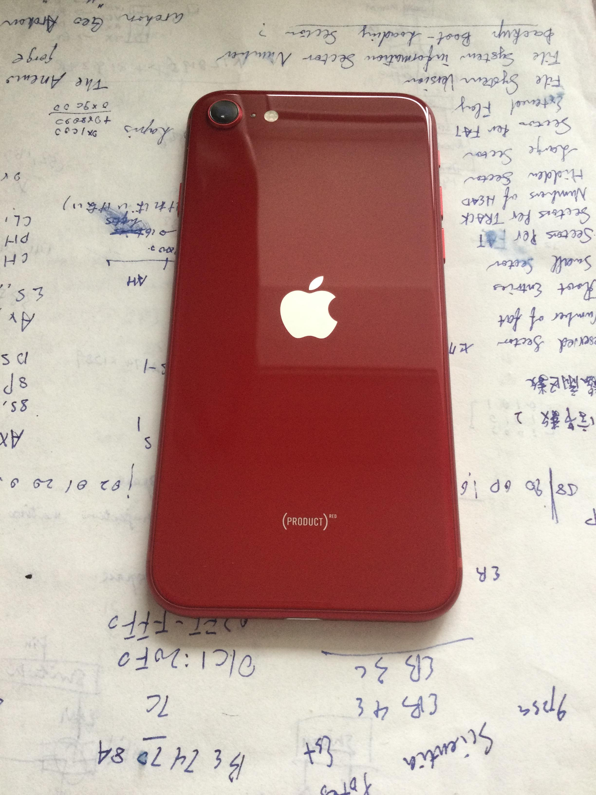
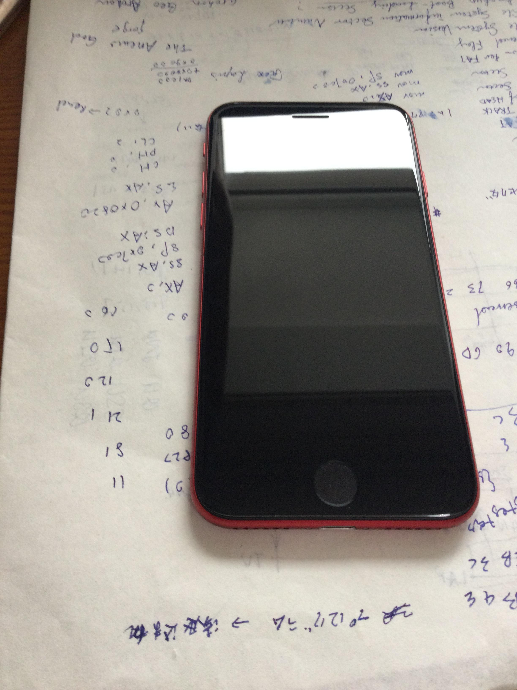
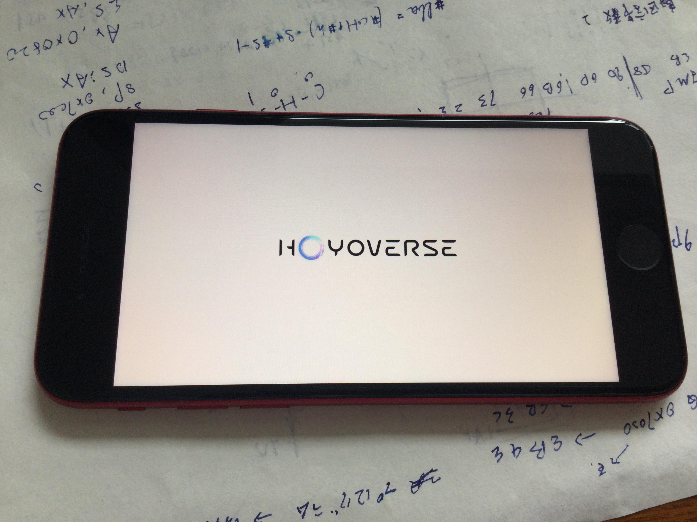
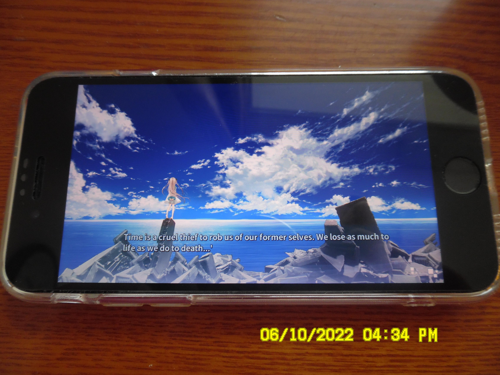
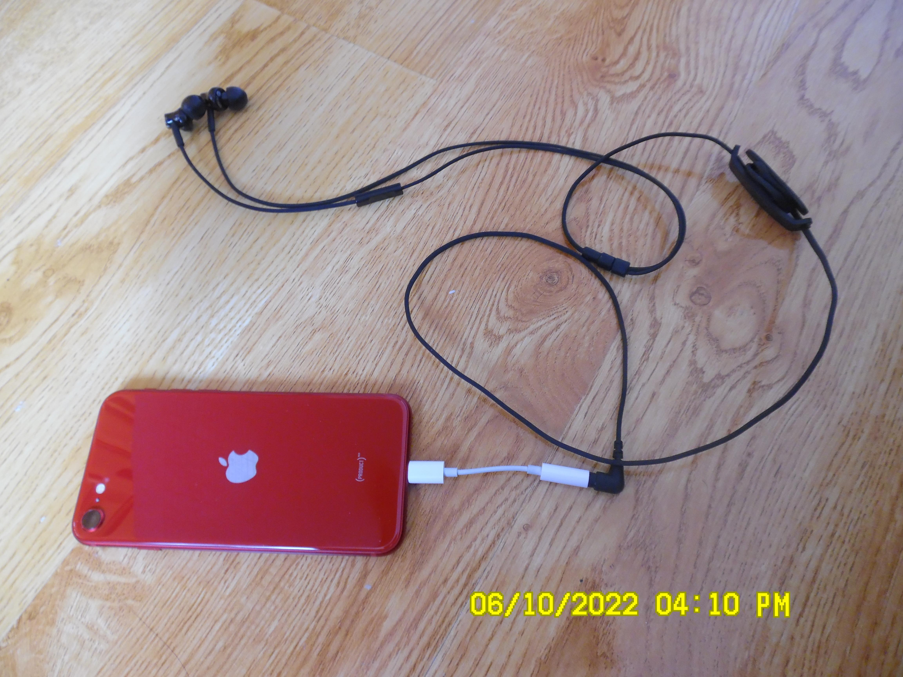
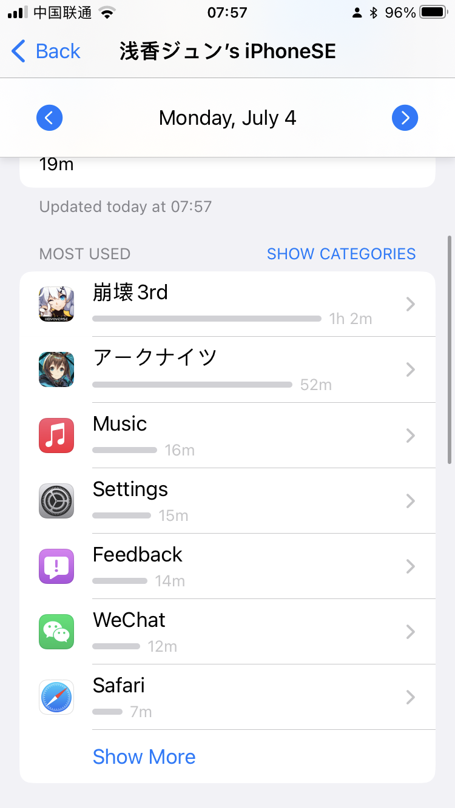
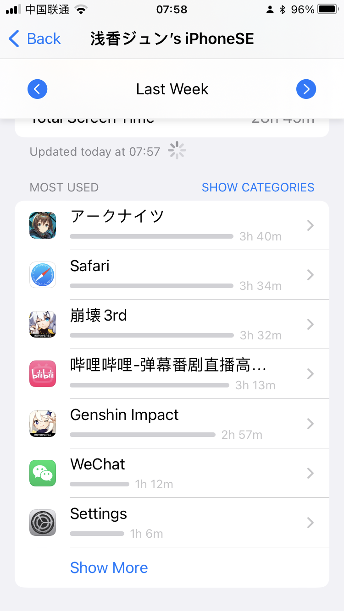
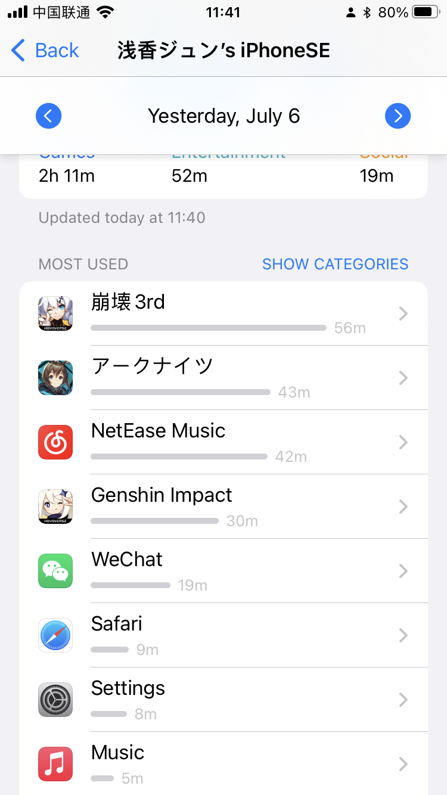

Evaluating iPhone SE 2022
~My New Main Battle Device~
0x00: Abstract
Maybe it doesn’t suit you, or maybe it does suit you, who it’s all up to. Which I care about only is that it suits me.
0x01: Background
June 2022, the Summer NEMT ends. To prepare for the coming university life, I bought a new mobile phone — iPhone SE 3rd generation.
When I am in senior high school, there are 2 phones for everyday use. One is iPhone 6s — an iPhone that I built myself by buying second-hand parts, thanks to which the cost is extremely low. That iPhone 6s has been my main device for 5 years, until now, a device for communicating, gaming and entertaining at school. Another is Huawei Mate 8, codename NEXT. The device was bought by my father for business, until he dropped it into the water. After the fixing on the motherboard, it relived, but may the fixing was not perfect, it still has lots of issues including power-losing — it may costs 10000mAh to fully charge itself. So that device was placed at home specifically for running a certain “HUGE APPs” including WeChat and QQ.
So, it’s time to buy a new device.
In my personal view, I prefer the products by Apple. Thanks to Mr. Jobs, the devices designed by that company have a certain “Designing Philosophy” which cannot be perfectly learned by others. Although I usually grumbling at the limitation on iOS, but it is in the aspect of Design, that I cannot grumble at — may be that is the so-called “Only the paranoia survive”.
0x02: Evaluation
The Style I bought is the red one, except which, there are “Midnight” and “Starlight”. After the selection in person, it turned to me that the “Starlight” is a kind of white with a bit of yellow, whilst the “Midnight” is dark blue. In a word, they are not as pure as the red. That’s why I chose the red one, but it’s all up you to select which style you like. There writes (PRODUCT)RED at the downside of the device, it is likely to be the fruit by the funding to a charity foundation.



This 3rd generation of iPhone SE inherit the appearance design of its past generation, the size of the screen is 4.7 inch, as large as iPhone 6s’. As to me, who have been using iPhone 6s for 5 years, it is extremely easy to use (lol). As for the 4.7-inch screen, a friend of me emailed me, “What’s the ERA now?” And I replied like this, “If you’re talking about the non-Full LCD Display, that does be my personal choice, lol. But if you’re talking about the size of it… You should get knowledge of it that in the past few years, with that 4.7-inch “small” screen, I passed the Summer Pockets, which has more than 2 million words, defeated the Herrscher 2, liberated the Reunion Movement and traveled thousands of miles in Teyvat.”
When speak of the “Full Display”, this iPhone SE is likely to be the only non-Full Display selling all around the world, but it also to be a reason for me to choose it — It seems to be a kind of complex, just follow my proof.
The mobile phones I have used：
— Nokia N97 mini, resolution: 360x640 (grade 3&4 Primary School)
— Samsung Galaxy S4, resolution: 1920x1080 (grade 4 Primary School to grade 2 junior High)
— iPhone 6s, resolution: 1334x750 (grade 2 junior High to NOW)
— Huawei Mate 8, resolution: 1920x1080 (grade 2 junior High to NOW)
Despite the differences among resolutions, they have a feature in common: the Aspect Ratio: Standard 16:9, which leads to my bad habit. Nowadays, screens are being made slimer and slimer, I always feel a kind of uncomfortable when using my parents’ phones with 2:1 screen.
Another reason why I chose the 16:9 screen is the look and feel of video-playing and gaming CG-displaying. Most of the videos are standard aspect ratio, most of which are 16:9, it’s not a big deal after all. But as for CGs….
That’s my personal experience. Several days before the NEMT (aka. Gaokao in Chinese), I was passing Shiroha route of Summer Pockets under the stairs in stadium. One day, a friend of my told me that the CG in the version I was playing seems larger than his. Afterwards, it turned to us that that 16:9 CG cannot be fully displayed in non-standard screen, we should swipe up and down to look over. For one thing, the CONSTANT game engine of Key’s surely should be updated, for another, I got aware of the advantages of standard aspect ratio. The moment I got that the iPhone SE 3rd generation still uses 16:9 screen, I appealed it to the first position on the Option list.
By the way, this iPhone uses LCD, which is also my preference, longer life, more eyes-friendly, cheaper…. Whilst LCD and OLED both have their merits and demerits, it’s up to you which to choose.

This iPhone SE hasn’t the 3.5mm headphone jack, instead of which, there are speaker and microphone installed on the bottom of the phone. As same as the iPhone X, its receiver can be used as another speaker for stereo. But that forces me to buy a lightning to 3.5mm converter to drive my ATH-CK350iS. I usually listen to classical music and have a strict quality requirement of headphones. I am using ATH-CK350iS, an elementary level headphone, with about 24-ohm impedance, which can be driven perfectly by this iPhone (, which cannot decode DSD format).

Let’s talk about the battery. It is a congenital issue of a small-size devices that the small battery capacity. Its nameplate capacity is 2000 mAh. As to me, it is just enough. I am always using 3-6 hours daily, force 4G mode on, communicating (Phone-Calls, texts (SMS and iMessage) mainly also Email. WeChat is focusing on the health-QR-code) and gaming. If I run a bit more games daytime, it will leave about 20% at night. If playing less games, it will leave more than 30%. I getting to bed at 9 p.m., this small battery is enough for me.



Recalling the days with iPhone 6s at high school, which has a smaller battery. In high school days, I played much less games, basically Arknights and some Visual Novels. Thanks to the drop of the WeChat, instead, using Email, and the net games don’t in demand of network bandwidth, so I forced 3G mode on constantly, which can also satisfy my demand. Even so, it would only leave 10% after the nighttime study (8:30 p.m.). Getting to bed right away, I wouldn’t grumble it.
Now, this iPhone SE has a bigger battery, making me easier in saving the battery. In a word, whether the phone suit you depend on your demands.
As for the Camera, it has only one camera. Talking about mobile phone cameras, comparing with the cameras with professional lenses, the CMOS of mobile phone camera is comparatively small, which has less luminous flux and they’re usually the fixed-focus lenses. To capture a certain landscape accurately, it will invoke CPU and GPU, running a lot of complex algorithms to capture a picture. Nowadays, phones with multi cameras make the gap between phone cameras and professional cameras a bit smaller.
In such an era, this iPhone SE with only one camera surely seems to be left behind. But that doesn’t matter for its name “SE”. iPhone SE 3rd generation has an A15 processor, which also been using on iPhone 13 series, is (likely) the fastest mobile processor in the world, thanks to which, the enhancement to the photography is undoubtedly significant. But personally, I hardly ever use phone to do scenery photography — I’ve got a Samsung WB35F, which is my “main force”. The camera of the mobile phone has naturally become a “code scanner” and “image memo”; although the iPhone SE has been blessed by the A15, the photography capability is second only to the iPhone 13 series. But in my mind, these photos calculated by algorithm are far from the photos captured by the lens (but I do have to admit that Apple’s camera algorithm is the most “real” among many mobile phone manufacturers at present — at least it aims to “restore the truth”, instead of “post-processing” purposes).
I am not a professional in photography evaluation, if you want to know more, please read other related articles.
Captured by iPhone SE with Camera APP
Captured by iPhone SE with Lightroom Pro mode
Captured by Samsung WD35F
0x03 Feelings
I’ve been using this new device for more than a week.
My father raised a question before I bought this iPhone, “Why Apple released such an iPhone with most UNIQUE non-Full Display, with only one camera, have no difference in appearance design from the product 5 years age, but have the fastest mobile processor inside? For nostalgia? Or just provide an option for low-consuming groups?
Considering carefully, although this type of iPhone is a kind of “classic”, but it cannot be the decisive factor. The so-called low-consuming groups do not be related to phone-buying directly (Take me as an example. My parents spent their entire month’s salary to buy me a new phone, which is truly a big cost. But as for this “High End” phone, it may be my life-requirement for coming 7 to 10 years. I wouldn’t buy a low-end device, which may be died in 3 or 4 years — this huge cost becomes necessary naturally.).
The reason why Apple released such an iPhone, is same as the reason why I bought it — It has a standard 16:9 display, it has a eyes-friendly LCD screen, it has a small body, which can be controlled with one hand, it has a high price/performance ratio…. This iPhone seems to be tailor-made for me. The needs of customers are different from the trend, and the products designed naturally do not follow the trend. Although multi cameras has been prevailing, although the Full Display has been a basic equipment of today’s phones, they are all void in facing of the customers’ demands, all of which can be repudiated by a “I don't need it.”, and spend the saved cost into appearance design and operating system development, make the product into the real ART.
That is the reason why iPhone SE was here, and the reason why I bought it — Why do I have to left the tailor-made product, to spend more money in catching the “fashion” and buy such many functions I do not need? Just like Mr. Jobs said, “Most people make the mistake of thinking design is what it looks like. People think it’s this veneer — that the designers are handed this box and told, ‘Make it look good!’ That’s not what we think design is. It’s not just what it looks like and feels like. Design is how it works.”
Jun ASAKA
Wednesday, 13 July 2022